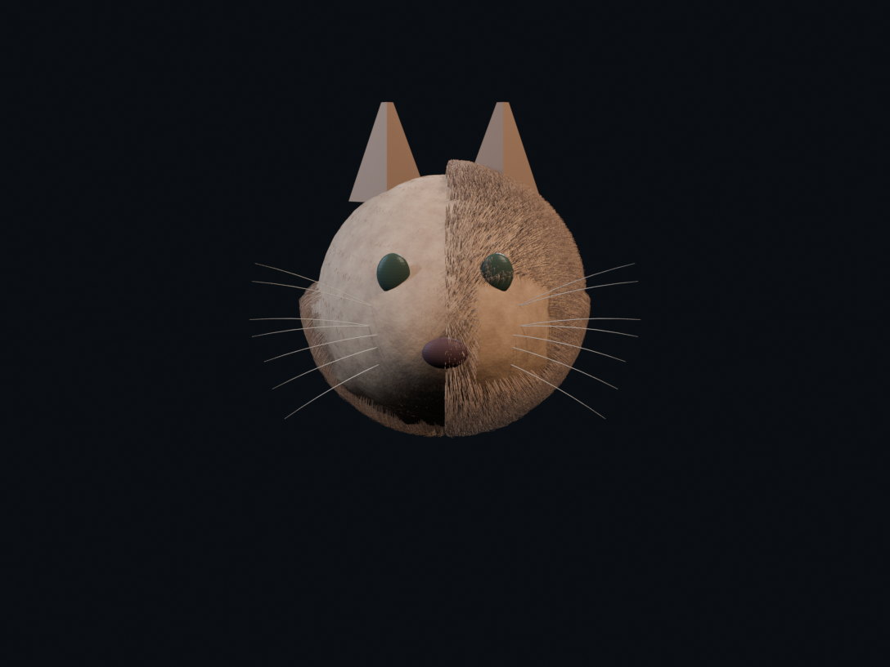
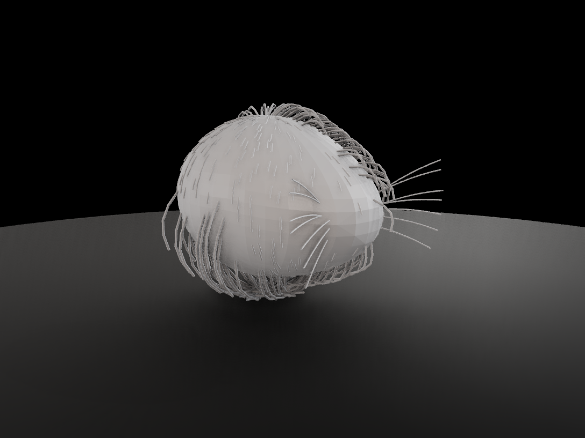
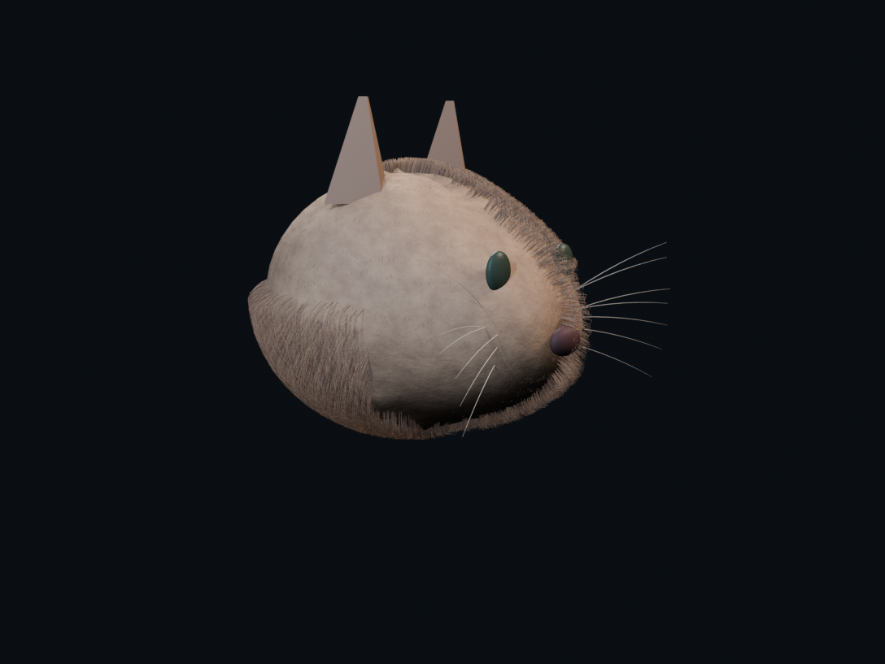
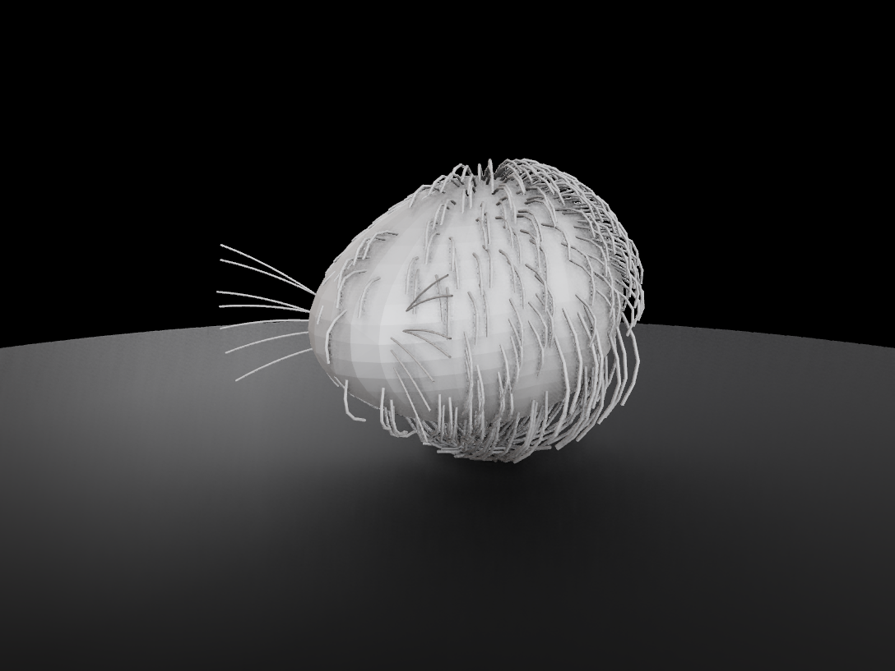
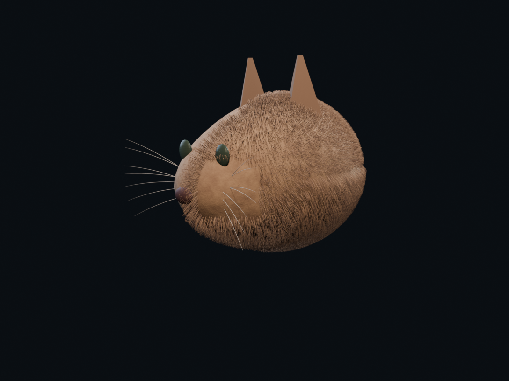
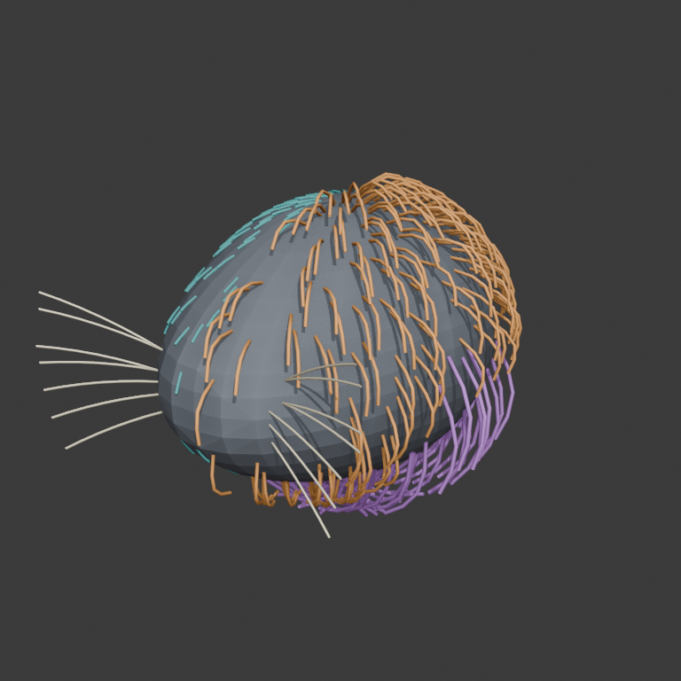

Same hair truth, friendlier eyes
A paired observation assay over one frozen procedural groom. The left arm is the exact diagnostic imagery used by the failed first VLM→SAM run. The right arm changes presentation only so the fibers integrate into the kind of coherent creature material the target pipeline normally sees.
Inspection predicate
Does the right arm read as an ordinary groomed creature rather than a line-covered debugging sculpture?
The required signal is coat integration, recognizable carrier context, and perceptual separation among short, puffy, ruff, and whisker systems. Production beauty and anatomical authority are outside this assay.
What is held fixed
Front

{kind=link}

Sealed camera: [0.0, 0.6, 3.0] → [0.0, 0.0, 0.0]
Left three-quarter
{kind=link}

{kind=link}

Sealed camera: [-2.1, 0.6, 2.1] → [0.0, 0.0, 0.0]
Right three-quarter
{kind=link}

{kind=link}

Sealed camera: [2.1, 0.6, 2.1] → [0.0, 0.0, 0.0]

Hidden membership reference
This color-coded plate remains truth-only and is never sent to the estimator. Cyan is short coat, orange is puffy coat, purple is ruff, and cream is whiskers.
The source-like arm deliberately uses one randomized tawny palette across all coat systems so color cannot carry membership.
Audit
Preflight: presentation_pair_bound_for_visual_inspection
Observation: procedural-groom-source-like-v0-density-12x · route gpu-greenroom:kaminos_blender_cast_cleanup
Renderer: BLENDER_EEVEE · Blender 5.1.2 · rendered fiber curves 43574
Density pressure: 12× · baseline coat fibers 3630 · effective coat fibers 43560
Claim ceiling: Observation-domain friendliness under one procedural truth fixture only; no estimator correctness, target-distribution equivalence, anatomical truth, production grooming, or visual admission.
Visual admission: false · scientific admission: false.